Nyzo version 570 (commit on GitHub) adds the TransactionForwardCommand and FrozenEdgeCommand to the client to allow transaction forwarding. It also improves the memory efficiency of data persistence in NodeManager.
The new commands add functionality to the client. The NodeManager persistence improvements reduce the memory requirements of the verifier.
In NodeManager, the activeIdentifiers set was eliminated to reduce memory usage. The getNumberOfActiveIdentifiers() method, used by the StatusResponse, was replaced with the more informative and more frugal getNumberOfNodesInMap() method. The unused isActive() method was removed.
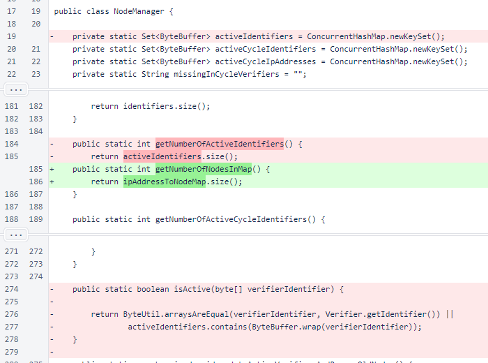Building of the activeIdentifiers set was removed from NodeManager.updateActiveVerifiersAndRemoveOldNodes().
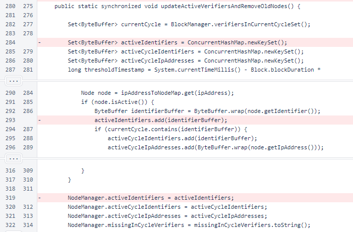NodeManager.persistNodes() was rewritten to use less memory. Instead of building the file contents as a list of strings and writing the list to a file, a BufferedWriter is used. The file is written to a temporary location and moved atomically to the final location to avoid potential data loss if the verifier program is terminated mid-write.
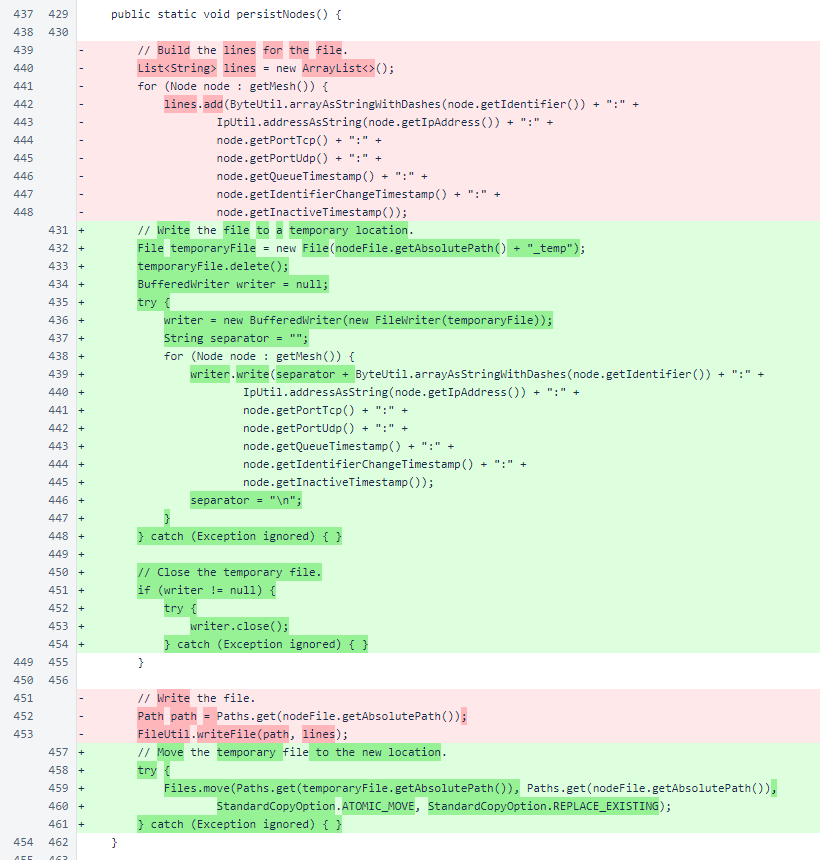NodeManager.loadPersistedNodes() was changed similarly. Instead of reading the entire file into memory and iterating over the lines of the file, a BufferedReader is now used, and the lines are processed as they are read.
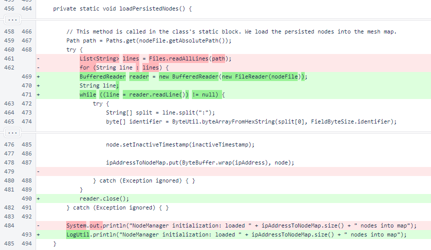ClientTransactionUtil.sendTransactionToLikelyBlockVerifiers() now returns an array of ByteBuffer objects. This array is always of size 3, and it contains null if the information for one of the positions is missing. The middle position of the array contains the identifier of the verifier that is expected to verify the block containing the transaction. The other two positions contain the verifier before and after this verifier in the cycle. Sending a transaction to all 3 of these verifiers allows the transaction to be processed even if a verifier is added or removed from the cycle between the time the transaction is sent and the time the block is processed.
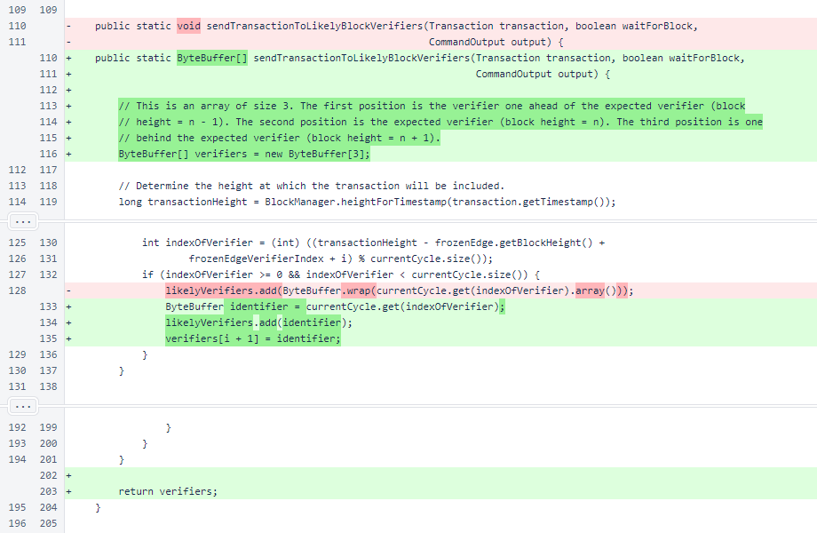FrozenEdgeCommand and TransactionForwardCommand were added to CommandManager.
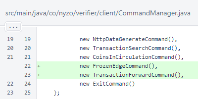In CommandTable, the rows field was changed from an array of type String to an array of type Object. This allows numerical and boolean values to be represented properly in JSON.
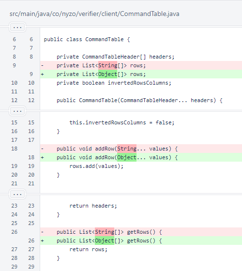In ConsoleUtil, two changes were made to accommodate the new data type of the row field in CommandTable.
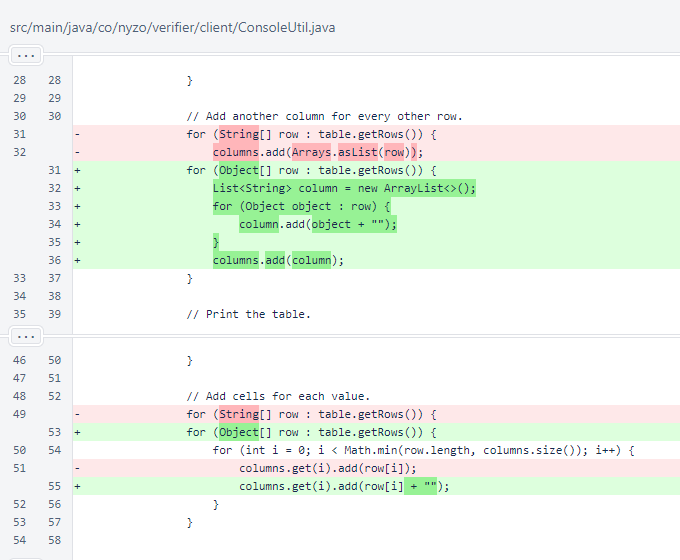In SimpleExecutionResult, some changes were made to accommodate the new data type of rows in CommandTable objects. Also, a missing call to WebUtil.sanitizeString() was added.

In SimpleExecutionResult.toJson(), considerations were added for Boolean values and for the wider possibility of types in data cells. These changes, collectively with the table changes, allow boolean (true/false) and numerical values to be rendered properly in JSON responses.
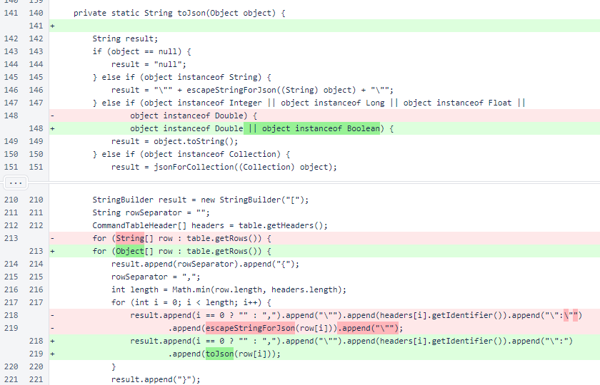In BalanceDisplayCommand and CoinsInCirculationCommand, block heights are no longer converted to String objects. The does not affect their display in HTML responses, but it causes them to be displayed as numerical values in JSON responses.
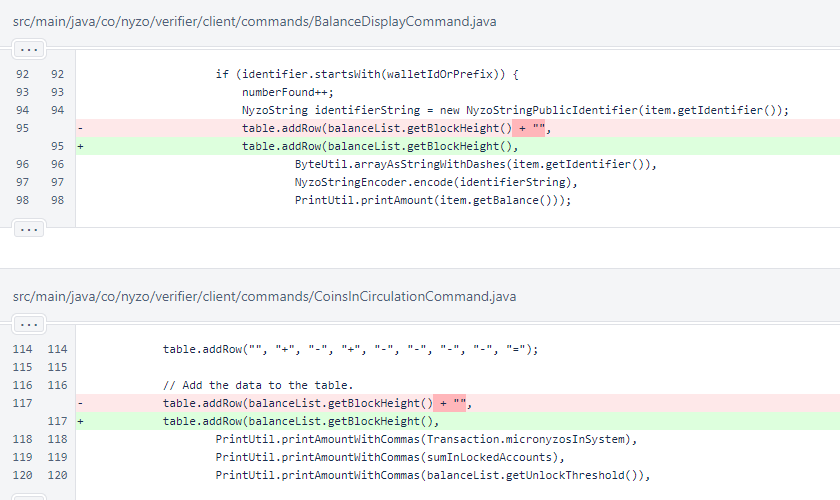FrozenEdgeCommand implements the methods required by the Command interface. It requires no arguments, nor does it require validation or confirmation. It is not long-running.
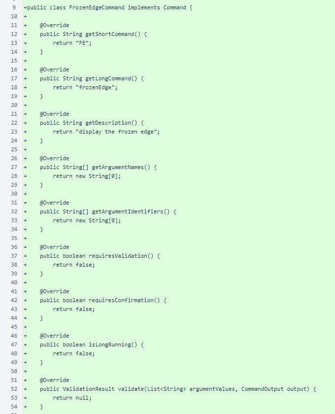FrozenEdgeCommand provides the height, hash, verification timestamp in milliseconds, and distance from open edge.
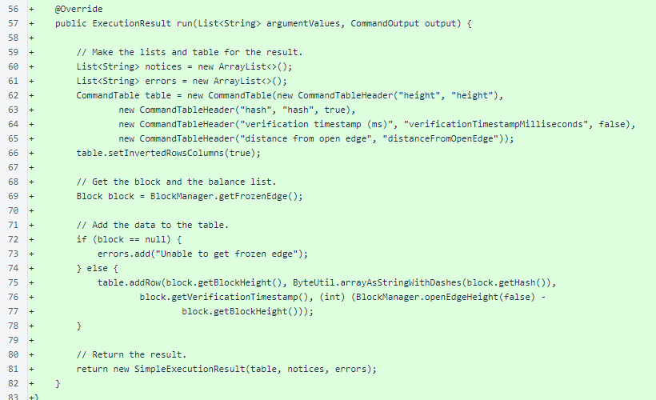In NttpDataGenerateCommand, the NTTP number is no longer concatenated with an empty string for the result table. This does not change the result, because this field had already been changed to a String when support for compound NTTP numbers was added in version 566.
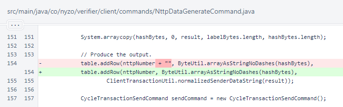The new TransactionForwardCommand accepts a Nyzo string of a transaction and forwards it to the appropriate verifiers in the cycle. The transaction is the only argument. The command requires validation, but it does not require confirmation. It is not long-running.
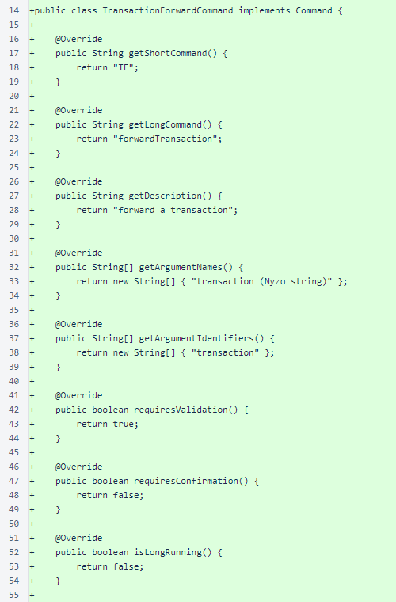The validate() method of TransactionForwardCommand only checks to ensure that the argument provided represents a valid NyzoStringTransaction.
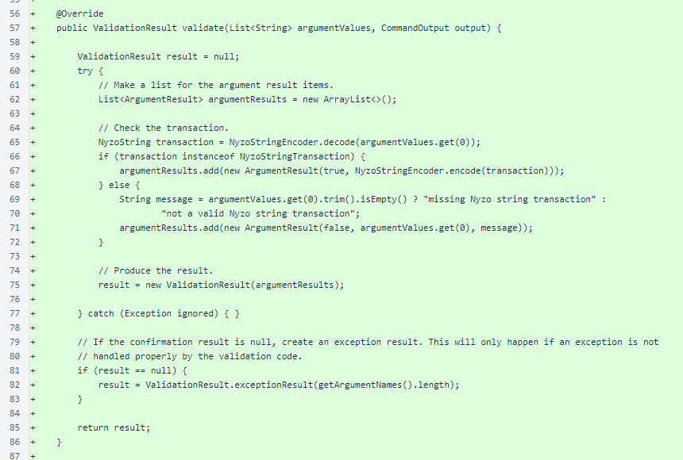The run() method of TransactionForwardCommand first builds the headers for the CommandTable. The IDs of the transaction sender and receiver, along with the IDs of the expected verifier and the verifiers before and after in the cycle, are provided in both raw format and in Nyzo string format. The transaction amount is also provided, as is a value indicating whether the transaction was actually forwarded to the cycle verifiers.
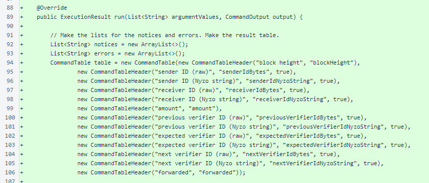The transaction is retrieved from the arguments and initial validation is performed. Warnings and errors from the validation process are provided in the response. If the transaction passes initial validation, it is forwarded to the 3 verifiers in the cycle most likely to approve it.
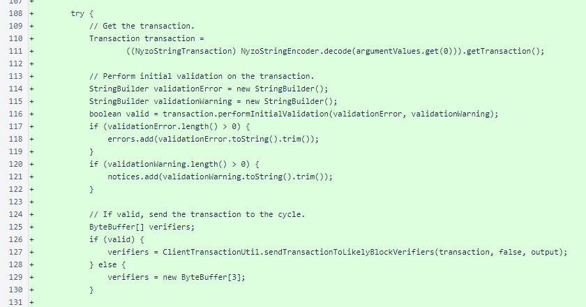A row containing the result data is added to the table, and the result is returned as a SimpleExecutionResult.
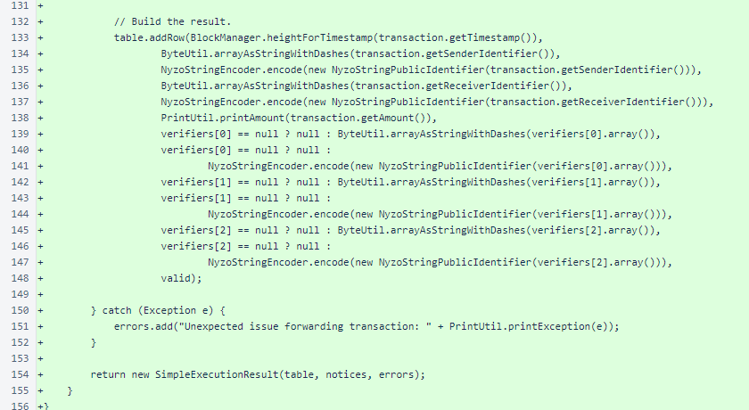TransactionSearchCommand now includes an option to search by Nyzo string.
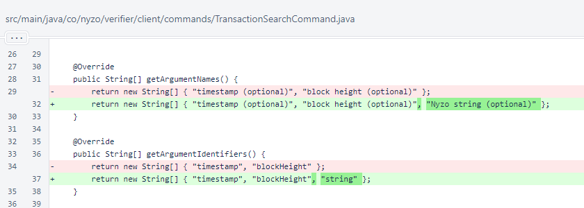The transaction string is now used when provided. It is used to set the timestamp for search.
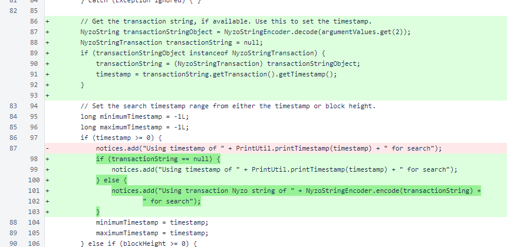The transaction string is now provided as an output for all transactions, regardless of the search method used. While timestamp is used as the primary search criterion when the transaction string is provided, further filtering is applied to ensure that only the precise transaction represented by the transaction string is returned in the search results.
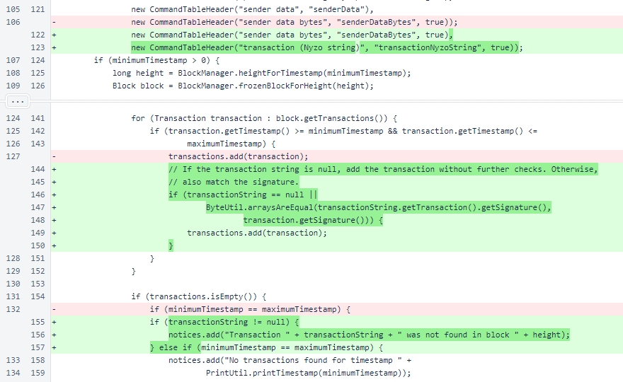Each transaction is encoded as a Nyzo string for display in the result table. Numerical values are no longer converted to String objects, taking advantage of the new ability of CommandTable to properly handle non-String values. Two unnecessary concatenations with the empty string were also removed.
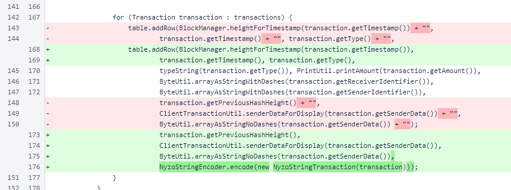In StatusResponse, the replacement NodeManager.getNumberOfNodesInMap() is now used instead of NodeManager.getNumberOfActiveIdentifiers(). This is a change in meaning: the new value is the number of IP addresses tracked by the NodeManager, while the old value was the number of unique identifiers present in the map.
This new value, while eliminating some computational overhead, is also a more useful value to observe. For in-cycle verifiers, knowing the active identifiers is important, because it prevents multiple verifier instances for a single identifier from masking connectedness issues within the cycle. However, connectedness of the overall mesh, when out-of-cycle verifiers are included, is not a concern.
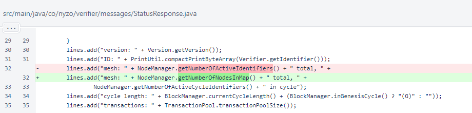